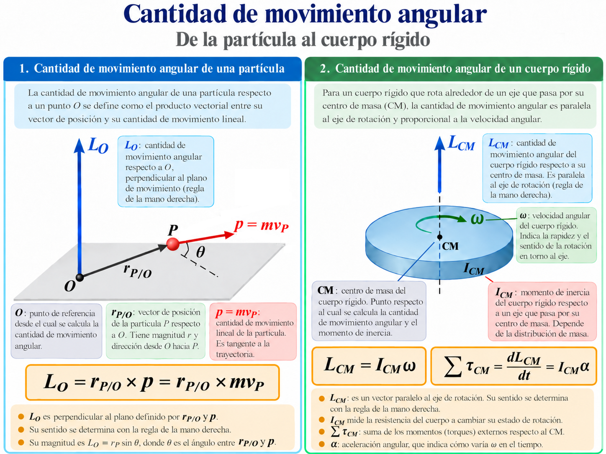
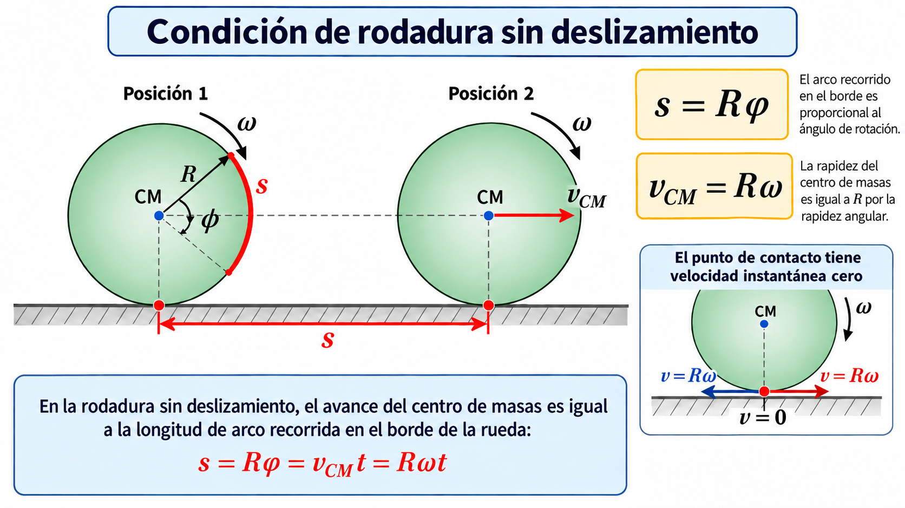
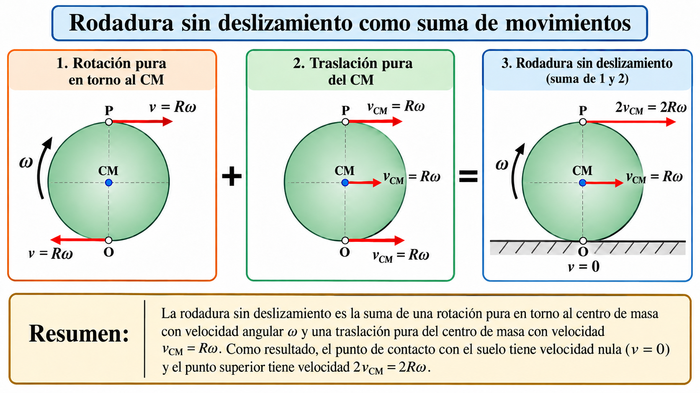
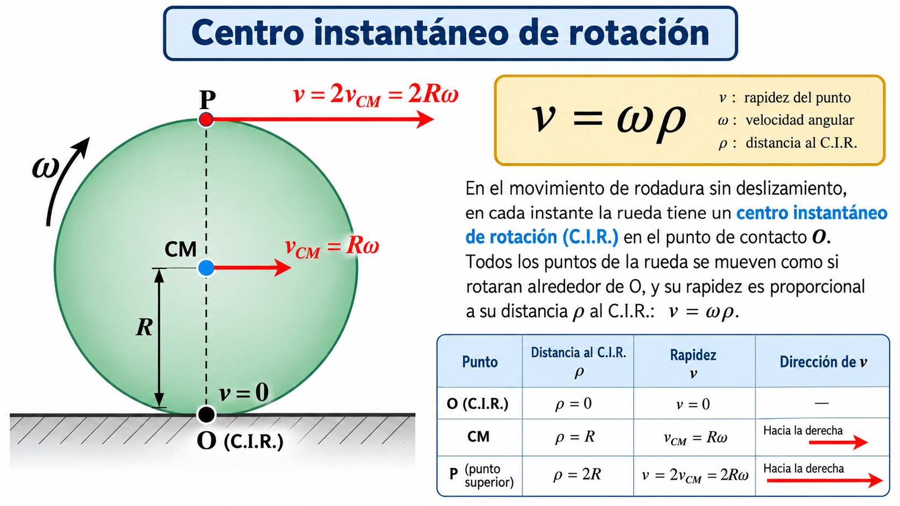

Guía de ejercicios resueltos 10 (PDF)
Material complementario para la Unidad 10. Incluye solamente ejercicios de Estática y Rototraslación, con enunciados, gráficos explicativos y resoluciones fundamentadas paso a paso.
Presentación y alcance del apunte
Propósitos de aprendizaje
Un cuerpo rígido puede trasladarse, girar o realizar ambos movimientos simultáneamente. El propósito de esta unidad es integrar los modelos de traslación, torque y energía para interpretar cuerpos apoyados, ruedas, rodillos, mecanismos y sistemas de transporte.
Al finalizar, se espera que puedas: determinar condiciones de equilibrio; hallar resultantes de fuerzas paralelas; identificar el centro de gravedad y la estabilidad; describir velocidades de puntos de un sólido; formular las condiciones de rodadura sin deslizamiento; aplicar las ecuaciones de Newton a la rototraslación; y justificar la influencia del momento de inercia en la aceleración.
1. Equilibrio de un cuerpo rígido: fuerzas y momentos
En las unidades anteriores se aplicó la segunda ley de Newton para estudiar la traslación y se introdujo el torque para estudiar la rotación. Ahora ambas condiciones se emplean simultáneamente para describir estructuras, apoyos, cuerpos sometidos a empujes y sistemas suspendidos. Una fuerza puede ser incapaz de trasladar un objeto y, sin embargo, generar un momento que tienda a hacerlo girar.
1.1. Condiciones de equilibrio y diagrama de cuerpo libre
Un cuerpo rígido permanece en equilibrio estático cuando la aceleración lineal de su centro de masa y su aceleración angular son nulas. En problemas planos deben satisfacerse simultáneamente las tres condiciones:
El momento de una fuerza respecto del punto \(O\) se calcula mediante \(\vec\tau_O=\vec r\times\vec F\); en el plano, \(\tau_O=r_x F_y-r_y F_x\). Elegimos antihorario positivo. El punto \(O\) puede elegirse libremente para un cuerpo en equilibrio.
Ejemplo introductorio. Viga simplemente apoyada
Viga horizontal homogénea de longitud \(L\), peso \(P=400\,\mathrm N\) aplicado en su centro; apoyos A y B con reacciones verticales \(R_A\) y \(R_B\). Suponemos que no actúan fuerzas horizontales y que los apoyos no ejercen momentos.
De momentos: \(R_B L=200L\Rightarrow R_B=200\,\mathrm N\). De la ecuación vertical: \(R_A=400-200=200\,\mathrm N\).
1.2. Ejemplo clásico — escalera apoyada contra una pared
Una escalera uniforme de longitud \(L=5{,}00\,\mathrm m\), peso \(P_e=200\,\mathrm N\), se apoya en una pared lisa. Su pie A está a \(3{,}00\,\mathrm m\) de la pared y el contacto superior B se encuentra a \(4{,}00\,\mathrm m\) de altura. Una persona de peso \(P_p=600\,\mathrm N\) está a \(2{,}00\,\mathrm m\) a lo largo de la escalera desde el pie. Se busca la reacción de la pared, la normal del piso y el rozamiento necesario.
Paso 1. Geometría. Por el triángulo de lados 3, 4 y 5: \(\cos\alpha=3/5=0{,}60\) y \(\sin\alpha=4/5=0{,}80\). El peso de la escalera actúa en su punto medio, cuya distancia horizontal al pie es \(x_e=(5/2)(0{,}60)=1{,}50\,\mathrm m\). La persona tiene un brazo horizontal \(x_p=2(0{,}60)=1{,}20\,\mathrm m\).
Paso 2. Fuerzas. Eje \(x\) positivo hacia la pared, eje \(y\) positivo hacia arriba. La pared ejerce \(R_w\) hacia afuera; el piso ejerce \(f_s\) hacia la pared y \(N\) hacia arriba.
Paso 3. Resolución. Sustituimos valores en la ecuación de momentos:
Paso 4. Condición de rozamiento y comprobación. \(f_s\leq\mu_sN\), de modo que \(\mu_{s,\min}=f_s/N=255/800=\boxed{0{,}319}\). La verificación da \(255-255=0\), \(800-200-600=0\) y \(4(255)-1{,}5(200)-1{,}2(600)=0\,\mathrm{N\,m}\).
1.3. Ejemplo clásico — cuadro suspendido mediante dos cables
Un cuadro de peso \(P=120\,\mathrm N\) está sostenido por dos cables simétricos que forman \(35^\circ\) con la horizontal. El esquema ideal representa dos fuerzas de tensión aplicadas en puntos simétricos de un cuadro rígido homogéneo; el peso actúa en su centro.
Paso 1. Componentes de las tensiones. Por simetría \(T_1=T_2=T\); sin embargo, primero escribimos las tres ecuaciones para no ocultar la condición de momentos.
Paso 2. Momentos. Tomamos momentos respecto del centro del cuadro C. Cada punto de fijación está a distancia horizontal \(d\) del centro y una distancia vertical \(q\) por encima de él. Al calcular el momento de cada tensión intervienen tanto sus componentes horizontales como verticales: \(\tau_C=r_xF_y-r_yF_x\).
Como los brazos de los dos cables son simétricos, la ecuación de momentos confirma que T₁ = T₂. Si los cables convergen exactamente en el punto superior común, también se puede tomar ese punto como origen de momentos: las tres fuerzas pasan por su vertical o por el propio punto y la sumatoria de momentos vale cero.
Paso 3. Despeje.
Verificación: \(\sum F_x=-104{,}6\cos35^\circ+104{,}6\cos35^\circ=0\) y \(\sum F_y=2(104{,}6)\sin35^\circ-120\simeq0\,\mathrm N\). Cada cable soporta una tensión mayor que la mitad del peso porque únicamente su componente vertical sostiene el cuadro.
1.4. Ejemplo clásico — cartel suspendido en el extremo de una barra
Una barra homogénea horizontal de longitud \(L=3{,}00\,\mathrm m\) y masa \(m_b=10\,\mathrm{kg}\) está articulada a una pared en A. Del extremo B cuelga un cartel de masa \(m_c=20\,\mathrm{kg}\). Un cable unido a B tira hacia la pared formando \(40^\circ\) con la barra. Determinar \(T\), \(A_x\) y \(A_y\). Se adopta \(g=9{,}81\,\mathrm{m/s^2}\).
Paso 1. Identificación de fuerzas. Peso de la barra: \(P_b=m_bg=10(9{,}81)=98{,}1\,\mathrm N\), aplicado a \(L/2=1{,}50\,\mathrm m\). Peso del cartel: \(P_c=m_cg=20(9{,}81)=196{,}2\,\mathrm N\), aplicado a \(L=3{,}00\,\mathrm m\). El cable ejerce \(T_x=-T\cos40^\circ\), \(T_y=T\sin40^\circ\).
Paso 2. Las tres ecuaciones de equilibrio.
Paso 3. Resolver primero los momentos.
Paso 4. Reacciones en A.
Verificación: \(\sum F_x\simeq292{,}2-381{,}5\cos40^\circ\simeq0\); \(\sum F_y=49{,}05+245{,}25-98{,}1-196{,}2=0\), y \(\sum\tau_A=735{,}75-147{,}15-588{,}60=0\,\mathrm{N\,m}\). Los ligeros residuos horizontales se deben al redondeo.
1.5. Ejemplo clásico — balanza romana
Una balanza romana posee un brazo corto de \(0{,}15\,\mathrm m\), del que cuelga una carga de \(80\,\mathrm N\), y un brazo largo con un pilón móvil de \(20\,\mathrm N\), colocado a una distancia desconocida \(x\) del apoyo O. Se desprecia inicialmente el peso de la barra.
Paso 1. Diagrama de cuerpo libre y ecuaciones. La carga y el pilón ejercen fuerzas verticales hacia abajo; el apoyo transmite componentes \(R_x\) y \(R_y\). Elegimos sentido antihorario positivo.
Paso 2. Resolución: \(R_x=0\), \(R_y=100\,\mathrm N\); y \(12-20x=0\Rightarrow \boxed{x=0{,}60\,\mathrm m}\).
Paso 3. Considerar el peso propio. Si la barra pesa \(10\,\mathrm N\), con centro de gravedad a \(0{,}10\,\mathrm m\) a la derecha del apoyo, se agrega esa fuerza al diagrama y se replantean las tres ecuaciones:
Así, \(R_y=110\,\mathrm N\) y \(12-20x-1=0\Rightarrow 20x=11\Rightarrow \boxed{x=0{,}55\,\mathrm m}\).
Verificación: \(\sum F_y=110-80-20-10=0\) y \(\sum\tau_O=12-20(0{,}55)-1=0\,\mathrm{N\,m}\). La diferencia entre \(0{,}60\) y \(0{,}55\,\mathrm m\) revela la importancia de la calibración y tara del instrumento.
1.6. Cierre conceptual: una metodología común
| Sistema | Pregunta central | Decisión de modelado |
|---|---|---|
| Bloque empujado | ¿Se desliza, permanece o vuelca? | Comparar \(F_d\) y \(F_v\), localizar la normal. |
| Bloque inclinado | ¿Vuelve o sigue cayendo? | Comparar \(\theta\) con \(\theta_c\) y ubicar la vertical del peso. |
| Escalera | ¿Qué rozamiento evita que caiga? | Tomar momentos respecto del pie. |
| Cuadro o cartel | ¿Cuánto resisten cables y apoyos? | Descomponer tensiones y sumar momentos. |
| Balanza romana | ¿Dónde colocar la pesa móvil? | Igualar momentos opuestos respecto del fulcro. |
2. Resultante de fuerzas paralelas
Las fuerzas paralelas pueden reemplazarse, para analizar su efecto externo sobre un sólido rígido, por una fuerza resultante aplicada en una posición que conserve el momento total. Para fuerzas verticales de magnitudes algebraicas \(F_i\) aplicadas en \(x_i\):
Si las fuerzas tienen sentidos opuestos, sus signos deben conservarse. Si la fuerza resultante es nula pero el momento no lo es, el sistema constituye un par de fuerzas: produce una tendencia a girar y no puede representarse por una sola fuerza.
2.1. Par de fuerzas: fuerza resultante nula, momento no nulo
Consideremos dos fuerzas paralelas de igual módulo \(F\) y sentidos opuestos, cuyas líneas de acción están separadas una distancia perpendicular \(d\). Aunque no provocan aceleración de traslación, constituyen un par de fuerzas que tiende a hacer girar el objeto.
El momento de un par es independiente del punto elegido para tomar torques. Por ejemplo, al girar un volante aplicando \(F=30\,\mathrm N\) con cada mano y con líneas de acción separadas \(d=0{,}30\,\mathrm m\):
Un par no puede reemplazarse por una única fuerza resultante, porque esa resultante es cero mientras que el momento total no lo es.
2.2. Tres sistemas de fuerzas paralelas: comparación
Una resultante de fuerzas paralelas debe conservar la suma vectorial de fuerzas y el momento respecto de cualquier punto. Tomamos hacia arriba como sentido positivo y una coordenada horizontal x medida desde el extremo izquierdo.
El valor negativo muestra que la resultante puede ubicarse fuera del intervalo comprendido entre las fuerzas.
El cuerpo no experimentaría aceleración de su centro de masa causada por este par, pero sí puede adquirir aceleración angular. Su momento depende de la distancia perpendicular entre líneas de acción, no del punto elegido para calcularlo.
3. Centro de gravedad y centro de masa
El centro de masa es una propiedad de la distribución de masa. El centro de gravedad es el punto de aplicación de la fuerza gravitatoria resultante. En un campo gravitatorio prácticamente uniforme ambos coinciden.
Para cuerpos homogéneos y simétricos, el centro de masa coincide con el centro geométrico. En un sólido irregular debe calcularse mediante sumas o integrales, o localizarse experimentalmente por suspensión.
3.1. Cálculo del centro de gravedad de un cuerpo compuesto
Para una placa homogénea de espesor constante, la masa de cada parte es proporcional a su área: \(m_i=\sigma A_i\), donde \(\sigma\) es la masa por unidad de superficie. La expresión del centro de masa se simplifica:
Resultado: \(CM=(1{,}50;1{,}00)\,\mathrm m\). En gravedad aproximadamente uniforme, ese punto coincide con el centro de gravedad. Para una geometría con vacíos pueden aplicarse áreas negativas; debe definirse primero una figura completa y restarle el área retirada.
4. Estabilidad de cuerpos rígidos y vuelco
La estabilidad permite anticipar qué sucede cuando se modifica la posición de un cuerpo o se aplica un empuje. Primero analizaremos el bloque apoyado en equilibrio y el corrimiento de la reacción normal; después estudiaremos el bloque inclinado sobre un vértice, donde el sentido del momento del peso determina si regresa o cae.
La estabilidad describe la respuesta de un sistema ante una perturbación pequeña. Si aparece una tendencia a recuperar la posición inicial, el equilibrio es estable. Si la perturbación aumenta, es inestable. Si permanece en una nueva posición de equilibrio, es indiferente.
Cuando la energía potencial \(U\) depende de una coordenada \(q\), un equilibrio se localiza mediante \(dU/dq=0\). Un mínimo local de \(U\) corresponde a equilibrio estable y un máximo local a inestable; un potencial constante caracteriza el caso indiferente. Esta clasificación exige considerar los grados de libertad y restricciones del sistema.
4.1. ¿Por qué se vuelca un bloque?
Consideremos un bloque de masa \(m\), ancho de base \(b\) y altura \(H\), apoyado sobre un suelo horizontal. Aplicamos una fuerza horizontal \(F\) hacia la derecha a una altura \(h\). Mientras el bloque permanezca en equilibrio, el suelo ejerce una fuerza normal resultante \(N\), vertical, y una fuerza de rozamiento estático \(f_s\), horizontal. La normal no tiene por qué actuar en el centro de la base: su línea de acción se desplaza hacia el borde derecho para contrarrestar el momento del empuje.
Definimos \(\delta\) como el desplazamiento horizontal de la normal respecto del centro de la base. La coordenada medida desde el borde izquierdo se designa \(x_N\). Ambas magnitudes se relacionan por \(x_N=b/2+\delta\). Las ecuaciones de equilibrio son:
El punto \(C\) es el centro de masa y \(\delta\) representa la distancia desde el centro de la base hasta la línea de acción de la normal. El término \(-f_sH/2\) corresponde al momento del rozamiento aplicado en el piso: no debe omitirse si calculamos momentos respecto de C. Para medir desde el borde izquierdo: \(x_N=b/2+\delta\).
La resultante normal debe quedar dentro de la superficie de apoyo: \(-b/2\le\delta\le b/2\), o de manera equivalente \(0\le x_N\le b\). Al aumentar el empuje o su altura, la normal se desplaza hacia el borde derecho.
Condición en el borde derecho B. Al iniciarse el vuelco, \(x_N=b\), por lo que \(\delta=b/2\). También podemos tomar momentos directamente en B: tanto la normal como el rozamiento tienen brazo nulo; el empuje produce momento horario y el peso, antihorario.
En el instante límite, la resultante normal pasa por la esquina inferior derecha, que se convierte en el pivote incipiente. Una fuerza apenas mayor, si no hay deslizamiento, produce aceleración angular. No es correcto ubicar siempre la normal en el centro geométrico del apoyo.
4.2. ¿Se desliza antes de volcar?
El rozamiento estático disponible cumple \(f_s\leq \mu_s N\), con valor máximo \(\mu_s mg\) para este caso. El deslizamiento comienza al alcanzarse \(F_{\mathrm{deslizamiento}}=\mu_s mg\), siempre que el bloque no haya volcado antes. Comparar ambos umbrales es decisivo:
El deslizamiento comienza cuando \(F=F_d=\mu_smg\). El vuelco incipiente exige \(F=F_v=mgb/(2h)\). Comparar esos dos umbrales permite anticipar el primer mecanismo de pérdida de equilibrio. En el umbral de deslizamiento, el bloque puede seguir apoyado sobre toda su base; en el de vuelco, la reacción normal llega al borde.
| Comparación | Comportamiento esperado al aumentar lentamente \(F\) |
|---|---|
| \(b/(2h)<\mu_s\) | Primero inicia el vuelco. |
| \(b/(2h)>\mu_s\) | Primero comienza el deslizamiento. |
| \(b/(2h)=\mu_s\) | Ambos umbrales coinciden en este modelo ideal. |
El peso es \(mg=392{,}4\,\mathrm N\) y el umbral de deslizamiento es \(F_d=0{,}50(392{,}4)=196{,}2\,\mathrm N\). Por vuelco: \(F_v=392{,}4(0{,}30)/h=117{,}72/h\) en unidades SI.
| Altura del empuje | \(F_v\) | Qué ocurre primero |
|---|---|---|
| \(h=0{,}30\,\mathrm m\) | \(392{,}4\,\mathrm N\) | Desliza a \(196{,}2\,\mathrm N\) |
| \(h=0{,}60\,\mathrm m\) | \(196{,}2\,\mathrm N\) | Umbrales simultáneos (ideal) |
| \(h=1{,}00\,\mathrm m\) | \(117{,}7\,\mathrm N\) | Vuelca antes de deslizar |
Seguimiento de la normal. Si \(h=1{,}00\,\mathrm m\) y \(F=80\,\mathrm N\), el corrimiento central es \(\delta=80(1{,}00)/392{,}4=0{,}204\,\mathrm m\). La posición desde el borde izquierdo resulta \(x_N=b/2+\delta=0{,}504\,\mathrm m\), aún dentro de la base de 0,60 m. Para \(F=117{,}72\,\mathrm N\), \(\delta=0{,}300\,\mathrm m\) y \(x_N=0{,}600\,\mathrm m=b\): la normal alcanza el borde y se inicia el vuelco.
4.3. Bloque ya inclinado: ¿regresa o termina cayendo?
El inicio del vuelco por empuje no significa que el cuerpo deba caer completamente. Si se retira la fuerza y el bloque ha girado un ángulo \(\theta\) alrededor de la esquina inferior derecha sin perder el contacto con ella, el peso puede generar un momento que lo haga regresar a su posición inicial o que continúe la caída. Todo depende de la posición vertical del centro de masa respecto del pivote.
Modelo del bloque girado. Una vez retirado el empuje, las fuerzas externas son el peso \(mg\) y las reacciones del vértice B. Si el bloque está efectivamente evolucionando, no podemos imponer \(\sum F_x=\sum F_y=\sum\tau_B=0\): usamos las ecuaciones dinámicas y, solo en la posición crítica en reposo, las de equilibrio.
El momento del peso es nulo cuando \(H\sin\theta-b\cos\theta=0\). Entonces \(\tan\theta_c=b/H\). Para \(\theta<\theta_c\), ese momento es negativo y restaura la posición; para \(\theta>\theta_c\), es positivo y favorece el giro. En el instante crítico, si además no hay movimiento, \(a_{CM,x}=a_{CM,y}=\alpha=0\), de modo que \(R_x=0\), \(R_y=mg\) y \(\sum\tau_B=0\). Es un equilibrio inestable.
Para un bloque homogéneo de altura \(H\) y base \(b\), el centro de masa está inicialmente a \(b/2\) del lateral y a \(H/2\) del suelo. El ángulo crítico de inclinación (medido desde la orientación vertical inicial del bloque) satisface:
Para \(\theta<\theta_c\), la gravedad genera un momento restaurador alrededor del vértice; para \(\theta>\theta_c\), el momento tiende a aumentar la inclinación; en \(\theta=\theta_c\), el centro de masa está exactamente sobre el pivote y la energía potencial es máxima. Se supone que se retira el empuje, que el vértice sigue fijo y que se desprecia el impulso angular inicial: un bloque con velocidad angular suficiente podría superar el punto crítico aunque en ese instante \(\theta<\theta_c\).
4.4. Simulación interactiva — corrimiento de la normal
En esta simulación se representa el equilibrio antes del despegue del borde. Podés variar la fuerza aplicada, la altura del empuje, la geometría del bloque y el rozamiento para observar cómo la reacción normal se desplaza sobre la base. Cuando la normal llega al extremo derecho, el sistema alcanza el límite de vuelco.
Actividad 1 — Predicción del corrimiento de la normal
1. Antes de experimentar: formulá una predicción.
Con el mismo bloque, la misma fuerza y el mismo coeficiente de rozamiento, aumentamos únicamente la altura de aplicación de la fuerza. ¿Cómo cambia la posición de la resultante normal mientras el bloque permanece en equilibrio?
2. Exploración guiada: Mantené la fuerza, la masa, el ancho, la altura del bloque y el coeficiente de rozamiento constantes. Variá únicamente el control «Altura del empuje». Compará la posición de la normal antes y después. Si el bloque deja de estar en equilibrio, interpretá ese estado por separado.
Esta actividad no registra datos personales. La comprobación se realiza en este navegador.
La posición \(x_N\) se mide desde el borde izquierdo de la base. Mientras \(0<x_N<b\), la resultante normal permanece dentro del apoyo. Al llegar al extremo derecho, el bloque entra en el umbral del vuelco.
4.5. Simulación interactiva — ¿vuelve, queda al límite o se vuelca?
Ahora el bloque se supone ya inclinado alrededor del vértice inferior derecho. El criterio relevante ya no es el corrimiento de la normal, sino la posición de la línea de acción del peso respecto del pivote. Si esa vertical cae hacia el lado interior del apoyo, el peso produce un momento restaurador; si cae exactamente sobre el pivote, el equilibrio es límite; si pasa al otro lado, el peso aumenta el vuelco.
Actividad 2 — Estabilidad de un bloque inclinado
1. Antes de experimentar: formulá una predicción.
Un bloque homogéneo tiene base de 0,60 metros y altura de 1,20 metros. Su ángulo crítico es aproximadamente 26,6 grados. Si se lo inclina 35 grados alrededor del vértice y se lo suelta desde el reposo, ¿qué tendencia tiene?
2. Exploración guiada: Fijá la base en 0,60 metros y la altura en 1,20 metros. Compará la línea vertical del peso para 15°, 26,5° y 35°. Observá de qué lado del pivote cae la proyección del centro de masa.
Esta actividad no registra datos personales. La comprobación se realiza en este navegador.
La vertical roja indica dónde cae la línea de acción del peso respecto del punto de giro. En esta simulación se supone que el bloque se suelta lentamente, sin velocidad angular inicial apreciable.
5. Puente con la unidad anterior: cantidad de movimiento angular
5.1. Cantidad de movimiento angular: repaso conceptual
En dinámica rotacional ya se estudió la cantidad de movimiento angular. La recuperamos aquí porque permite comprender que una rueda no es solamente un cuerpo que se traslada: también transporta movimiento asociado a su rotación. Para una partícula respecto de un punto O:
Para un cuerpo rígido que rota alrededor de un eje principal de simetría, en la dirección de ese eje, se cumple:
La forma \(\sum\tau_{CM}=I_{CM}\alpha\) supone un momento de inercia constante alrededor del eje considerado. Si el momento externo neto respecto de ese eje es cero, la componente correspondiente de la cantidad de movimiento angular permanece constante. Este repaso retoma contenidos desarrollados previamente; en esta unidad lo aplicaremos a la rototraslación.

Esta figura cumple una función de puente conceptual entre la partícula y el cuerpo rígido. En el primer caso, el momento angular surge del producto vectorial entre la posición y la cantidad de movimiento lineal; en el segundo, aparece ligado al momento de inercia y a la velocidad angular. Desde el punto de vista pedagógico, conviene remarcar que ambos casos comparten la misma idea física: describir el “estado de giro” del sistema respecto de un punto o de un eje de referencia.
5.2. Sistema de dos masas y polea con momento de inercia
Dos masas \(m_2>m_1\) están unidas por una cuerda ideal, inextensible, que pasa por una polea de radio \(R\), momento de inercia \(I\) y eje fijo sin rozamiento. La cuerda no desliza sobre la polea. A diferencia de la polea ideal sin masa, las tensiones no son iguales: la diferencia genera el torque que acelera la polea.
Elegimos como positivo el ascenso de \(m_1\), el descenso de \(m_2\) y el giro correspondiente. Escribimos todas las ecuaciones relevantes para cada cuerpo:
En la polea, las reacciones del eje se ajustan para equilibrar las fuerzas traslacionales; el centro de la polea no acelera. El vínculo cinemático sin deslizamiento es \(a=R\alpha\). Por lo tanto:
De las ecuaciones de las masas:
5.3. Teorema de Steiner o de ejes paralelos
Para muchos problemas de rototraslación resulta imprescindible calcular el momento de inercia respecto de un eje que no pasa por el centro de masa. Si conocemos el momento de inercia respecto de un eje paralelo que sí pasa por el centro de masa, podemos trasladarlo mediante el teorema de Steiner:
donde \(I_O\) es el momento de inercia respecto del nuevo eje, \(I_{CM}\) es el momento de inercia respecto del eje paralelo que pasa por el centro de masa, \(M\) es la masa total y \(d\) es la distancia entre ambos ejes.
Idea de la deducción. Si elegimos ejes cartesianos paralelos, separados horizontalmente una distancia \(d\), un elemento de masa \(dm\) tiene coordenadas \((x,y)\) medidas desde el centro de masa. Su distancia cuadrática al nuevo eje es \((x+d)^2+y^2\). Por tanto:
El término lineal desaparece porque el eje de referencia pasa por el centro de masa.
6. Rototraslación y rodadura sin deslizamiento
6.1. Rodadura sin deslizamiento y movimiento combinado: traslación y rotación
Comenzamos con la condición de rodadura sin deslizamiento, porque es el caso físico más importante de la rototraslación en primer año: una rueda avanza y gira al mismo tiempo, sin resbalar sobre la superficie. A partir de esta idea se interpreta luego el movimiento combinado como suma de traslación del centro de masa y rotación alrededor de él.
Una rueda que avanza sobre un suelo inmóvil puede girar y trasladarse simultáneamente. Si el punto de contacto no desliza, su velocidad instantánea respecto del suelo es nula. Para una rueda circular de radio \(R\):
La segunda relación se refiere a las componentes tangenciales a la trayectoria, para rodadura rectilínea sobre una superficie fija. El punto superior de la rueda tiene rapidez \(2v_{CM}\) respecto del suelo, mientras que el punto inferior tiene rapidez cero en el instante de contacto.

El movimiento plano general de un cuerpo rígido puede descomponerse en la traslación de su centro de masa y una rotación respecto de ese centro. Esta descripción permite separar el movimiento global del cuerpo de los movimientos relativos de sus puntos.
El término asociado a \(\alpha\) es tangencial y el último es centrípeto. Estas expresiones son válidas para puntos de un mismo cuerpo rígido y describen el movimiento respecto de un sistema inercial.

Desde el punto de vista pedagógico, esta descomposición permite interpretar con claridad por qué en la rodadura sin deslizamiento se cumple \(v_{CM}=R\omega\), por qué el punto inferior queda momentáneamente en reposo y por qué las velocidades de los distintos puntos de la rueda no son iguales, aun cuando todos pertenecen al mismo cuerpo rígido.
6.1.1. Velocidad de una partícula en posición arbitraria
En la rueda que rueda hacia la derecha, adoptamos el eje \(x\) hacia la derecha, el eje \(y\) hacia arriba y el giro horario con velocidad angular \(\vec\omega=-\omega\hat k\), donde \(\omega>0\) es su módulo. Sea \(P\) un punto de la periferia ubicado por el ángulo \(\beta\), medido desde la horizontal positiva.
El vector apunta hacia la derecha y \(22{,}5^\circ\) por debajo de la horizontal, porque \(\tan^{-1}(1{,}41/3{,}41)=22{,}5^\circ\). Como verificación: en el punto superior \(\beta=90^\circ\) se obtiene \(2v_{CM}\) hacia la derecha; en el inferior \(\beta=-90^\circ\), velocidad nula.
6.2. Centro instantáneo de rotación
En un movimiento plano con velocidad angular no nula existe un punto instantáneo de velocidad cero. Para rodadura sin deslizamiento sobre suelo fijo, coincide con el contacto. En ese instante las velocidades de los demás puntos pueden obtenerse como si el cuerpo girara alrededor del contacto:

Actividad 3 — Velocidades instantáneas en rodadura
1. Antes de experimentar: formulá una predicción.
Para una rueda que rueda hacia la derecha sin deslizar sobre suelo fijo, ¿qué rapidez tienen el punto de contacto inferior y el punto superior, respectivamente?
2. Exploración guiada: Mové el ángulo de giro de la simulación y observá los vectores verde, violeta y rojo. Prestá especial atención a las posiciones extremas de la partícula: arriba y en contacto con el suelo.
Esta actividad no registra datos personales. La comprobación se realiza en este navegador.
Interpretación instantánea: el punto marcado P posee una velocidad neta vP que resulta de sumar la velocidad de traslación del centro de masa vCM y la velocidad relativa de rotación vrot = ω × r. La leyenda superior identifica los vectores por color. El punto marcado se mueve con velocidad neta vP, obtenida al sumar vCM y vrot.
El punto instantáneo I simplifica el cálculo de velocidades, pero no debe tratarse automáticamente como un eje fijo para escribir ecuaciones de aceleración o de torque. Su posición puede cambiar continuamente.
6.3. ¿Qué es una cicloide y de dónde sale?
Si en vez de seguir el centro de masa seguimos un punto de la periferia de la rueda, la trayectoria ya no es una recta. Cuando la rueda rueda sin deslizar, un punto del borde genera una curva llamada cicloide. Es la trayectoria que deja un punto de una circunferencia al rodar sobre una recta.
Tomemos el instante inicial con el punto marcado apoyado en el suelo. Si la rueda giró un ángulo \(\varphi\), por la condición de rodadura el centro avanzó horizontalmente una distancia \(R\varphi\). A eso hay que sumarle la posición del punto respecto del centro:
Estas ecuaciones paramétricas describen una cicloide. Cuando \(\varphi=0\), el punto está en el suelo. Cuando \(\varphi=\pi\), el punto alcanza la altura máxima \(2R\). Cuando \(\varphi=2\pi\), el punto vuelve al suelo y se completa un arco. Cada vuelta adicional produce un nuevo arco, de longitud horizontal \(2\pi R\).
7. Dinámica de un cuerpo que rueda
El análisis dinámico combina la segunda ley de Newton para el centro de masa con la ecuación rotacional respecto de ese centro:
Rodadura por un plano inclinado
Para un cuerpo de masa \(M\), radio \(R\) y momento de inercia \(I_{CM}\), que desciende sin deslizar por un plano de ángulo \(\theta\), elegimos positivo hacia abajo de la pendiente. La fuerza de rozamiento estático \(f_s\) apunta hacia arriba del plano en este modelo sin torque motor:
Al sustituir y despejar:
El rozamiento debe ser suficiente para sostener la condición de rodadura: \(|f_s|\leq\mu_sN\), con \(N=Mg\cos\theta\). Si no se satisface, el cuerpo desliza y estas ecuaciones dejan de describir completamente su movimiento.
7.1. Desarrollo completo: cilindro que desciende por un plano inclinado
Supongamos un cuerpo rígido circular de masa \(M\), radio \(R\), momento de inercia \(I_{CM}\), sobre un plano fijo de ángulo \(\theta\). Definimos: eje \(x\) paralelo al plano y positivo hacia abajo; eje \(y\) normal y positivo hacia afuera; giro positivo en el sentido de descenso. El rozamiento estático apunta cuesta arriba cuando no existe un torque motor adicional.
1. Sumatoria de fuerzas paralelas: el peso aporta \(+Mg\sin\theta\) y el rozamiento \(-f_s\).
2. Sumatoria de fuerzas normales: el centro de masa no se acelera en esa dirección mientras conserva el contacto con el plano.
3. Sumatoria de momentos respecto del CM: tanto el peso como la normal pasan por el centro de masa, así que sus momentos son cero; el rozamiento tiene brazo \(R\).
4. Restricción cinemática: para rodadura sin deslizamiento sobre superficie fija:
5. Eliminación de incógnitas: sustituimos la aceleración angular en momentos y luego el rozamiento en la ecuación longitudinal.
6. Comprobación del rozamiento disponible. No basta con calcular la aceleración: también debemos verificar que el rozamiento requerido no supere su límite estático.
Si \(\mu_s=0{,}25\), el límite es \(\mu_sN=0{,}25(33{,}98)=8{,}50\,\mathrm N\). Como \(6{,}54<8{,}50\), **la rodadura sin deslizamiento es posible**. Si \(\mu_s=0{,}10\), el límite sería \(3{,}40\,\mathrm N\): no podría sostenerse ese modelo de rodadura.
8. Teorema trabajo–energía para rototraslación
La energía cinética de un cuerpo rígido en movimiento plano se separa en dos contribuciones: la energía de traslación del centro de masa y la energía de rotación respecto de él.
Para rodadura sin deslizamiento, \(\omega=v_{CM}/R\), por lo que:
8.1. ¿Por qué el rozamiento estático no realiza trabajo neto durante la rodadura ideal?
Esta afirmación parece contradictoria: al bajar una rueda por un plano, el rozamiento estático \(\vec f_s\) suele apuntar hacia arriba de la pendiente, produce una torca sobre el centro de masa y permite que el cuerpo aumente su velocidad angular. Que produzca torque no implica que entregue o quite energía mecánica total.
Demostración 1 — potencia de la fuerza en su punto de aplicación. El trabajo elemental de una fuerza aplicada en un punto material de velocidad \(\vec v_A\) es \(dW=\vec F\cdot d\vec r_A\). Por lo tanto:
Si la rueda rueda sin deslizar sobre un piso inmóvil, el punto material de la rueda que está instantáneamente en contacto con ese piso cumple:
En consecuencia, la potencia de la fuerza de rozamiento en cada instante y su trabajo acumulado durante el intervalo son:
Demostración 2 — descomposición entre traslación y rotación. Tomemos el caso del cilindro que rueda cuesta abajo y fijemos el sentido positivo del desplazamiento del centro de masa hacia abajo de la pendiente. El rozamiento estático tiene magnitud \(f_s\) y apunta cuesta arriba. Al recorrer una distancia \(ds\), su contribución al cambio de energía de traslación es negativa:
Simultáneamente, respecto del centro de masa el rozamiento genera una torca de magnitud \(\tau_{CM}=f_sR\), en el sentido del giro. Su contribución a la energía cinética de rotación es positiva:
Por la condición geométrica de rodadura sin deslizamiento, \(ds=R\,d\varphi\), y entonces:
El rozamiento estático redistribuye la energía cinética entre traslación y rotación, pero en rodadura ideal sobre un soporte fijo no cambia la energía mecánica total del cuerpo. La gravedad es la que aporta la energía al descender una altura.
8.2. Trabajo y potencia asociados a un torque
Si el torque produce una rotación elemental \(d\varphi\), la contribución rotacional al trabajo y la potencia se calculan mediante:
Cuando el torque es constante, \(W_{\mathrm{rot}}=\tau\,\Delta\varphi\). Estas expresiones permiten analizar motores, ejes y transmisiones. En un cuerpo que se traslada y gira, para calcular la potencia total de una fuerza debe utilizarse la velocidad del punto donde se aplica, o sumar correctamente sus contribuciones traslacional y rotacional.
El teorema trabajo–energía expresa que el trabajo neto de las fuerzas externas sobre el cuerpo equivale a la variación de su energía cinética total: \(W_{ext}=\Delta K\). Si únicamente la gravedad realiza trabajo y no hay pérdidas, \(K_i+U_i=K_f+U_f\).
Para un cuerpo que parte del reposo y desciende una altura vertical \(h\):
La energía potencial gravitatoria se reparte entre las dos formas de energía cinética. Por ello, un cuerpo que rueda suele alcanzar una rapidez menor que la de un cuerpo ideal que desliza sin rozamiento desde la misma altura.
9. ¿Qué cuerpo llega primero?
Es útil escribir el momento de inercia como \(I_{CM}=kMR^2\), donde \(k\) depende de la distribución de masa. En un mismo plano inclinado, para rodadura sin deslizamiento y partiendo del reposo:
| Cuerpo homogéneo | \(k=I/(MR^2)\) | \(a/(g\sin\theta)\) |
|---|---|---|
| Esfera maciza | \(2/5\) | \(5/7\approx0.714\) |
| Cilindro o disco macizo | \(1/2\) | \(2/3\approx0.667\) |
| Esfera hueca de pared fina | \(2/3\) | \(3/5=0.600\) |
| Aro de pared fina | \(1\) | \(1/2=0.500\) |
Con iguales condiciones iniciales y suficiente rozamiento estático, la esfera maciza llega antes, seguida del cilindro, la esfera hueca y el aro. La diferencia se explica por cómo se distribuye la masa respecto del eje de rotación.
10. Laboratorio virtual: cuerpos en un plano inclinado
Modificá la inclinación y la longitud del plano, seleccioná un cuerpo y observá cómo evoluciona su posición. El modelo supone rodadura ideal sin deslizamiento, sin resistencia del aire y con aceleración constante.
Actividad 4 — Distribución de masa y aceleración
1. Antes de experimentar: formulá una predicción.
Dos cuerpos de igual masa y radio parten desde el reposo por el mismo plano inclinado, sin deslizar. ¿Cuál alcanza primero el final: la esfera maciza o el aro fino?
2. Exploración guiada: Fijá el mismo ángulo y longitud de plano. Seleccioná primero «Esfera maciza» y registrá el tiempo de llegada; reiniciá, seleccioná «Aro fino» y repetí. Compará los tiempos sin modificar los demás parámetros.
Esta actividad no registra datos personales. La comprobación se realiza en este navegador.
Tiempo: 0.00 s · Recorrido: 0.00 m · Velocidad: 0.00 m/s
11. Ejemplos guiados de integración
Ejemplo A. Cilindro macizo que desciende por un plano
1. Situación y datos. Un cilindro homogéneo parte del reposo y rueda sin deslizar por un plano inclinado de \(\theta=30^\circ\). Determinar su aceleración con \(g=9{,}81\,\mathrm{m/s^2}\). No se asignan masa ni radio porque el resultado puede expresarse independientemente de sus valores.
2. Hipótesis. Cilindro rígido y macizo, plano fijo, rozamiento estático suficiente, sin resistencia del aire ni pérdidas por deformación. Su momento de inercia es \(I_{CM}=\tfrac12 MR^2\).
3. Diagrama de cuerpo libre. Actúan el peso \(M\vec g\), vertical hacia abajo y aplicado en el CM; la normal \(\vec N\), perpendicular al plano en el contacto; y el rozamiento estático \(\vec f_s\), dirigido cuesta arriba. Para la representación de los vectores, consultar el gráfico de 7.1.
4. Ejes y signos. Adoptamos \(+x\) cuesta abajo, \(+y\) perpendicular hacia fuera del plano, y sentido de giro descendente como positivo para \(\alpha\).
5. Ecuaciones completas. Las leyes de Newton y de rotación, con la condición de rodadura, son:
6. Desarrollo algebraico. De la ecuación de momentos se obtiene \(f_s=I_{CM}a_{CM}/R^2\). Al sustituir en el eje paralelo al plano:
7. Cálculo numérico. Para un cilindro macizo, \(I_{CM}/(MR^2)=1/2\):
8. Interpretación y comprobación. Se cumple \(0<a_{CM}<g\sin30^\circ=4{,}905\,\mathrm{m/s^2}\): la aceleración es menor que la de un cuerpo que deslizara libremente sin rozamiento. La normal es \(N=Mg\cos30^\circ\), y el rozamiento requerido es \(f_s=Ma_{CM}/2\). Para confirmar que la hipótesis de rodadura es viable hay que verificar \(f_s\leq\mu_sN\), lo que se completa en el ejemplo C.
Ejemplo B. Energía y rapidez al final del recorrido
1. Situación y datos. Una esfera maciza parte del reposo y rueda sin deslizar descendiendo una altura vertical \(h=1{,}40\,\mathrm m\). Calcular la rapidez final; adoptar \(g=9{,}81\,\mathrm{m/s^2}\).
2. Hipótesis. La esfera es rígida, el plano es fijo, no hay deslizamiento, ni resistencia del aire ni pérdidas disipativas. Se utiliza \(I_{CM}=\tfrac25MR^2\).
3. Fuerzas y elección del método. Actúan peso, normal y rozamiento estático. El peso realiza trabajo asociado al descenso vertical; la normal y el rozamiento estático no realizan trabajo neto sobre la esfera ideal en rodadura pura. Por eso resulta más económico usar conservación de energía que resolver nuevamente las fuerzas y torques.
4. Referencia. Tomamos el nivel final como altura potencial cero y la energía cinética inicial igual a cero.
5. Ecuación energética completa.
6. Despeje. Sustituyendo la condición de rodadura y la inercia de la esfera maciza:
7. Resultado con unidades.
8. Comprobación e interpretación. La caída libre desde la misma altura produciría \(\sqrt{2gh}=5{,}24\,\mathrm{m/s}\), superior a la rapidez de la esfera que rueda. La diferencia es consistente con que, al final, la energía cinética se reparte entre traslación y rotación. La masa y el radio se cancelan en este modelo.
Ejemplo C. ¿Se cumple la condición de no deslizamiento?
1. Situación y datos. Retomamos el cilindro macizo del ejemplo A, que desciende por \(30^\circ\). Determinar el coeficiente de rozamiento estático mínimo \(\mu_{s,\min}\) para que efectivamente pueda rodar sin deslizar.
2. Hipótesis y diagrama de fuerzas. Se mantienen las hipótesis del ejemplo A y su diagrama: peso, normal y rozamiento estático hacia arriba de la pendiente. La fuerza de rozamiento necesaria no se supone igual a \(\mu_sN\) salvo en el valor límite buscado.
3. Ejes y ecuaciones. Con \(+x\) cuesta abajo y \(+y\) normal hacia fuera:
4. Despeje de la fuerza requerida. Escribimos \(k=I_{CM}/(MR^2)\); para el cilindro macizo, \(k=1/2\). De las ecuaciones anteriores:
5. Condición estática límite. La rodadura sin deslizamiento requiere \(f_s\leq\mu_sN\), de modo que:
6. Resultado y verificación.
7. Interpretación. Para \(\mu_s\geq0{,}192\), el modelo de rodadura ideal es compatible con las fuerzas requeridas. Para valores menores, falla la condición de adherencia y hay que reformular el problema incluyendo deslizamiento; no alcanza con seguir usando \(a_{CM}=R\alpha\).
12. Autoevaluación integradora de la Unidad 10
Propósito: comprobar la interpretación de situaciones físicas, la elección de ecuaciones y la coherencia de los resultados. Las 15 preguntas combinan conceptos, lectura de modelos y cálculos breves. Cada respuesta correcta vale un punto; la puntuación es orientativa y no representa una calificación de parcial.
Cómo realizarla: respondé las preguntas, seleccioná Corregir respuestas y revisá la devolución de cada ítem. Las preguntas sin respuesta se contabilizan como pendientes y no suman puntos. Podés repetir la actividad con Nuevo intento. Para preservar su valor formativo, las soluciones solo aparecen después de corregir.
El cuestionario funciona directamente en esta página, incluso sin conexión una vez cargada. Las respuestas se mantienen solo durante este intento en el navegador y no se transmiten a terceros.
Síntesis conceptual y bibliografía
El equilibrio de un sólido rígido exige balance de fuerzas y momentos. La estabilidad depende de cómo responde el sistema a pequeñas perturbaciones. Los pares de fuerzas pueden producir un momento aunque la fuerza resultante sea nula. Cuando un cuerpo se traslada y rota, las velocidades de sus puntos se obtienen combinando el movimiento del centro de masa con la rotación relativa. En la rodadura sin deslizamiento, la condición \(v_{CM}=R\omega\) conecta ambos movimientos. El momento de inercia determina qué parte de la energía se destina a rotación y modifica la aceleración. En la rodadura ideal sobre un soporte fijo, la potencia del rozamiento estático es cero porque el punto material de contacto está instantáneamente en reposo; su contribución negativa a la traslación y positiva a la rotación se cancelan.
Anexo — Bibliografía recomendada
Young y Freedman, Física universitaria, vol. 1, 12.ª ed., sección 10.3; Serway y Jewett, Física para ciencias e ingeniería, vol. 1, 7.ª ed., sección 10.9; Giancoli, Física: principios con aplicaciones, vol. 1, 6.ª ed., capítulo 8; Tipler y Mosca, Física para la ciencia y la tecnología, vol. 1, 5.ª ed., capítulos 9 y 12.
Trabajo formativo: las actividades vinculadas con las simulaciones permiten formular hipótesis, contrastarlas con el modelo y explicar las diferencias entre predicción y resultado.